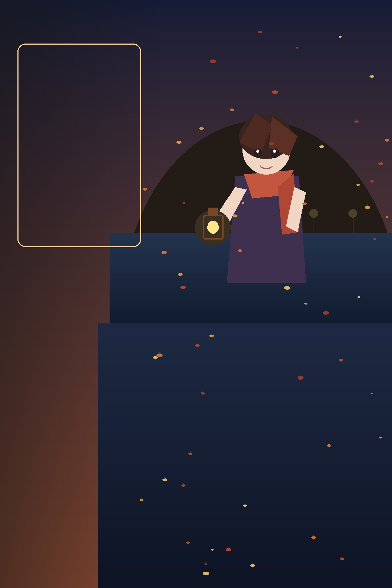

01
本期推荐
《四世同堂》
老舍
> 作品档案｜出版：2008｜豆瓣：9.4（49,554 人评价）｜类型：小说 / 家族 / 现代文学 豆瓣条目：https://book.douban.com/subject/3183775/
WEEKLY CULTURE EDIT · 17
十一月初，立冬将近。窗外的暖色一天少一点，屋里的灯却开始被提前拧亮。这一季不必再找盛大的落日。一页书、一顿饭、一支歌，或一座海边的城，把还亮着的那一点留住就好。

本期主题
秋天，把火留住｜本周 10 个文化推荐
20261104
THE ISSUE
以下十项依据截至 2026 年 11 月 4 日的公共榜单、长期口碑与中文讨论交叉挑选；入冬前，高分旧作和能核验的秋末城市漫游，仍比多数未稳新片更适合补课。以下十项未沿用往期主推，也没用「新作观察位」。
BOOKS
本期精选 3 部
01
本期推荐
老舍
> 作品档案｜出版：2008｜豆瓣：9.4（49,554 人评价）｜类型：小说 / 家族 / 现代文学 豆瓣条目：https://book.douban.com/subject/3183775/
02
本期推荐
石黑一雄
> 作品档案｜出版：2018｜豆瓣：8.9（47,764 人评价）｜类型：小说 / 回忆 / 英国文学 豆瓣条目：https://book.douban.com/subject/30142261/
03
本期推荐
东野圭吾
> 作品档案｜出版：2008｜豆瓣：9.1（511,703 人评价）｜类型：小说 / 推理 / 犯罪 豆瓣条目：https://book.douban.com/subject/3259440/
SCREEN
本期精选 3 部
01
本期推荐
李·昂克里奇、阿德里安·莫利纳
> 作品档案｜上映：2017｜豆瓣：9.1（2,036,563 人评价）｜类型：电影 / 动画 / 音乐 / 家庭 豆瓣条目：https://movie.douban.com/subject/20495023/
02
本期推荐
是枝裕和
> 作品档案｜上映：2008｜豆瓣：8.8（338,359 人评价）｜类型：电影 / 剧情 / 家庭 豆瓣条目：https://movie.douban.com/subject/2222996/
03
经典补课
黑泽明｜全球影史经典补课位
> 作品档案｜上映：1952｜豆瓣：9.3（58,293 人评价）｜类型：电影 / 剧情 / 影史经典 豆瓣条目：https://movie.douban.com/subject/1293847/
EDITOR'S NOTE
文化产品最好的趋势，不是让我们跑得更快，而是让我们重新有能力停下来。
本期完整文章保留了推荐理由、风险提示与参考来源；欢迎从任一部作品出发，再回到自己的书架和片单。
ARCHIVE
持续更新